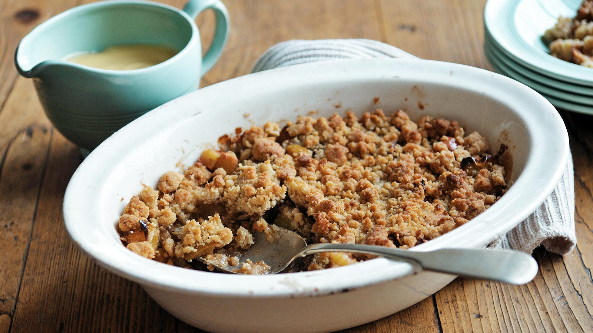

On this page you will learn how to make an apple crumble.
First of all, get the following ingredients:
Begin by peeling and slicing the apples. Then add to a saucepan and heat for 5 minutes, stirring in 100g of the brown sugar.
Add the blackberries to the saucepan and heat until fully mixed. Then pour the mixture into an oven dish.
mix 150g of butter, 100g of brown sugar, and 150g of plain flour in a mixing bowl to make the crumble topping.
Spread the crumble topping evenly over the top of the Apple and blackberry fruit mix. Pour the rolled oats on top and sprinkle on some extra sugar
Bake in the oven at 180deg for 25 minutes, or until the topping is golden brown.
serve with custard or cream!
